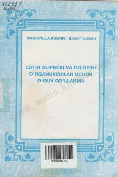

LALotin yozuviga asoslangan o'zbek alifbosi va imlosini o'rganish uchun o'quv qo'llanma.
Ushbu o'quv qo'llanma lotin yozuviga asoslangan o'zbek alifbosi va imlosini o'rganishga mo'ljallangan. Kitobda o'zbek adabiyoti namunalari, allomalar hayoti va ijodi hamda milliy qadriyatlarni aks ettiruvchi matnlar yangi alifboda taqdim etilgan.